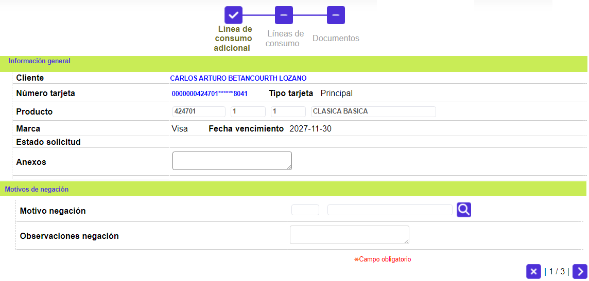
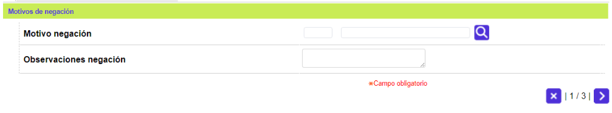

Línea de crédito adicional crédito
|
A través de esta forma o pantalla invocada desde la página tab o pestaña Solicitud de la opción Datos básicos del cliente, se puede registrar la solicitud de una nueva línea de crédito que demande el cliente de acuerdo con sus necesidades y con la especificación del producto, es decir, si en el momento en que el cliente solicitá el producto decidé no utilizar alguna línea de crédito de las que tiene definidas el producto, el cliente puede solicitar esa línea de crédito de la cual él, en algún momento prescindir. Dependiendo si el tipo crédito es Titular y adicionales, sólo adicional ó sólo titular la forma desplegará un número de tabs diferente. |

Descripción de Campos Página 1
|
Número Tarjeta |
Campo que posee lista de valores con los diferentes números de tarjeta aprobadas al cliente y de la que debe seleccionarse aquella para la que se desea solicitar la Línea de crédito adicional. Si solo se posee una tarjeta el sistema alimenta el campo al invocar la lista de valores y lleva el cursor al campo Anexos. |
|
Producto |
Campos de salida desplegados por la forma una vez ingresado o seleccionado el número de tarjeta asociado a la solicitud. Permitiendo conocer el Segmento, Grupo de afinidad y Descripción que junto con el Bin conforman el producto. |
|
Marca |
Campo de salida que ilustra la franquicia asociada al producto en los parámetros del módulo de Mercadeo. |
|
Fecha Vencimiento |
Campo de salida que en formato DD-MM-YYYY muestra la fecha en que expira el plástico actual de la tarjeta o producto del cliente. |
|
Tipo Tarjeta |
Campo que ilustra la clase o tipo de tarjeta a la que corresponde el producto a través del que se realiza la solicitud. |
|
Cupo global Tarjeta |
Campo de salida que ilustra el monto global que posee actualmente el cliente empresarial o principal que tiene tarjetas amparadas. |
|
Cupo global solicitado |
Aplica para tarjetas empresariales y principales que posean tarjetas amparadas, y puede contener el nuevo cupo global requerido por el cliente. |
|
Cupo global asignado |
Campo de salida que ilustra el monto o valor del nuevo cupo global asociado al producto, de tarjetas empresariales y principales que posean tarjetas amparadas, de forma manual o al surtir la etapa de asignación de cupos. |
|
Anexos |
Campo que permite ingresar información relacionada con la solicitud, referente a documentos suministrados por el cliente u otros datos que de alguna manera justifiquen y/o avalen la solicitud o su denegación. |

Descripción de Campos Página 2
|
Línea de Crédito Activa |
Campo de salida que ilustra todas y cada una de las líneas de crédito que a la fecha presente el cliente. |
|
Moneda |
Campo de salida que ilustra la moneda en que se denomina cada una de las líneas de crédito activas que presente el cliente. |
|
Modo uso |
Campo de salida que ilustra la jerarquía (principal, dependiente, especial) entre las distintas líneas de crédito activas que presente el cliente. |
|
Cupo actual |
Campo de salida que ilustra el monto o valor actual de cupo asociado a cada una de las líneas de crédito activas que presente el cliente. |
|
Línea crédito solicitada |
Campo que posee lista de valores poblada y filtrada a través de la opción de productos, esto es, sólo contiene las líneas asociadas al producto al que pertenece la tarjeta, y de la cual debe seleccionarse la línea de crédito adicional deseada por el cliente. |
|
Moneda |
Campo de salida que ilustra la moneda en que se denomina cada una de las líneas de crédito asociadas al producto. |
|
Modo Uso |
Campo de salida que ilustra la jerarquía (principal, dependiente, especial) entre las distintas líneas de crédito asociadas al producto. |
|
Cupo Solicitado |
Campo en el que se registra el monto o valor del cupo asociado a cada una de las líneas de crédito adicional solicitada; la forma controla que el valor del cupo total aprobado se distribuya con base en la jerarquía de las mismas. |
|
Cupo Aprobado |
Campo de salida que ilustra el monto o valor de cupo, de tarjetas empresariales o principales que posean tarjetas amparadas, de forma manual o al surtir la etapa de asignación de dichos cupos para cada una de las líneas de crédito adicionales, de acuerdo con el nuevo cupo total y la jerarquía de las mismas, determinada en la página tab Líneas crédito de la opción producto. |
|
Cupos por Tarjeta |
Campo que ilustra el nuevo cupo total de la tarjeta, incluyendo el monto de cada una de las líneas adicionales solicitada. |
|
Cupo asignado modificado por |
Campo de salida que ilustra el tipo y número de documento de identificación, y nombre del funcionario asociado al usuario de la base de datos, autorizado, que varía el monto de los cupos previamente asignados. |

Descripción de Campos Página 3
|
Motivo negación |
Campo que puede ser de salida si el valor del campo Estado es Aprobada totalmente, en cualquier otro caso posee lista de valores mediante la cual se indica la causa de negación de la solicitud, por lo que contiene datos, solamente, cuando la solicitud es negada, y permite conocer la razón correspondiente. |
|
Observaciones negación |
Campo que puede ser de salida si el valor del campo Estado es Aprobada totalmente, en cualquier otro caso permite registrar algunas notas que ilustren la razón o datos adicionales que motivaron la negación de la solicitud, incluso desplegar los mensajes automáticos derivados de la aplicación de los filtros a la solicitud u otras instancias en las que se produjo la negación. |
|
Estado |
Campo de salida, se actualiza dinámicamente acorde con la condición en que se encuentre la solicitud. |
|
Fecha estado |
Campo de salida que en formato DD-MM-YYYY ilustra la fecha en que arribá al estado actual. |
|
Etapa actual |
Campo de salida que ilustra el paso o estadio en que se encuentra la solicitud acorde tanto con su clase como con la parametrización de la misma, realizada en la opción Etapas invocada mediante el botón especial Más parámetros de la opción Parámetros del mismo módulo. |
|
Documento exigido |
Conjunto de campos en los que aparecen relacionados los documentos requeridos como soporte de la solicitud acorde tanto con su clase como con la parametrización de la misma, realizada en la opción Etapas invocada mediante el botón especial Más parámetros de la opción Parámetros del mismo módulo, y para cada uno de estos puede señalarse si han sido entregados o no por cada tipo de cliente (Natural, Avalista, Representante legal, Funcionarios, Empresa o Amparados). |

Descripción de Campos Página 4
|
Datos beneficiario adicional |
Campos de salida que muestran la información relacionada con las tarjetas adicionales que dependen del cliente principal o empresarial tales como tipo y número de documento de identificación, nombre y número de la tarjeta o producto. |